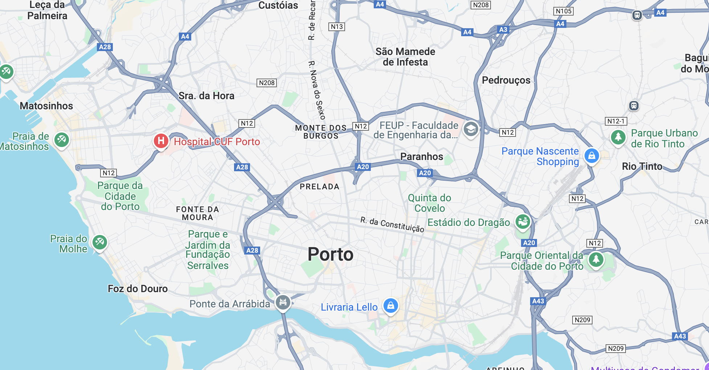

O Porto, no norte de Portugal, está situado à beira do rio Douro e é conhecido por suas pontes e pelo famoso vinho do Porto. A cidade, a cerca de 320 km de Lisboa, tem um clima mediterrâneo com verões quentes e invernos suaves, sendo um importante centro cultural e histórico do país.
